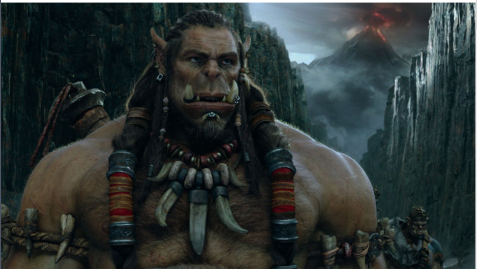
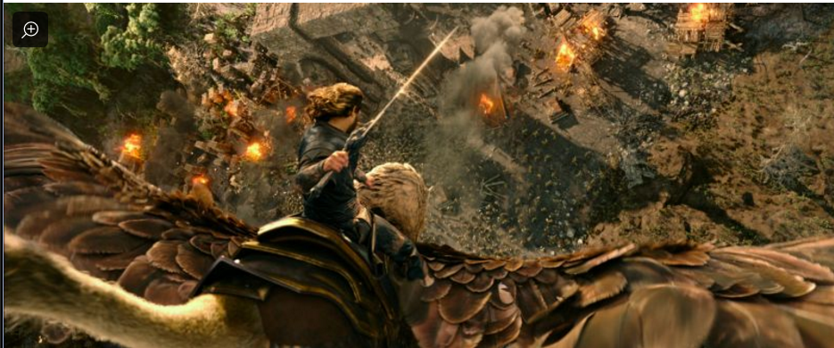

Warcraft:The Beginning is a 2016 American fantasy film directed by Duncan
Jones and written by Jones, Charles Leavitt and Chris Metzen. It is based
on the Warcraft video game series and novels set in the world of Azeroth.

Frostwolf chieftain Durotan worried about Gul'dan's plan

Brave Rosa came to rescue his beloved king, Lane